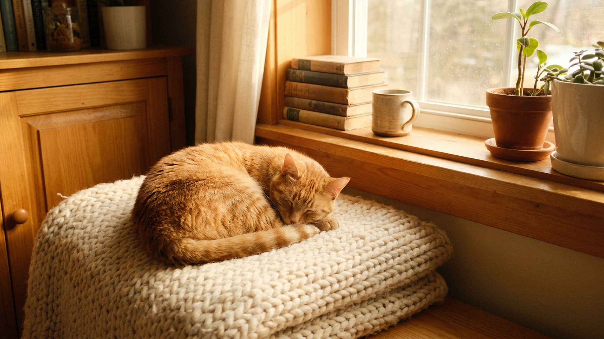

Кошка ест из миски — и вдруг взлетает вертикально вверх. Это не дрессировка и не трюк: за долю секунды сработал один из древнейших инстинктов выживания. Вирусные видео с огурцом кажутся смешными, но они фиксируют настоящий испуг — со всеми последствиями для нервной системы питомца. Ниже — что происходит в этот момент и почему повторять этот эксперимент не стоит.
🐾 У вашей кошки так же?
Расскажите в AnimaLife, как ведёт себя ваш питомец, — приложение объяснит причину и даст пошаговый план. Бесплатно, без записи к специалисту.
Разобрать свой случай → Разобрать в MAX →
У вас iPhone? AnimaLife есть в App Store
Когда кошка видит у миски незнакомый предмет, мозг запускает экстренную реакцию: «незнакомое + внезапное + рядом с едой = угроза». Тело реагирует быстрее сознания — прыжок, разворот, бегство.
Особую роль играет форма огурца: вытянутое, тёмное, неподвижное. Для кошачьего восприятия это подозрительно похоже на притаившегося хищника или змею. Эволюционно такая реакция спасала жизнь — у диких предков кошки. Домашний питомец унаследовал этот механизм целиком.
Огурец сам по себе не пугает. Тот же эффект даст банан, резиновая игрушка, скомканный пакет — любой предмет, положенный незаметно рядом с миской, пока кошка ела.
Ключевой элемент — внезапность в безопасной зоне. Кошка расслаблена, сосредоточена на еде, не сканирует пространство. Предмет появляется там, где его не было — мозг фиксирует угрозу. Огурец стал мемом просто потому, что кто-то первым снял это на видео.
Один эпизод выглядит как секундный испуг. На деле кошка переживает острый стресс с полным телесным ответом: выброс адреналина, учащённое сердцебиение, напряжение мышц. Если повторять — последствия накапливаются.
Для котят и пожилых кошек последствия серьёзнее: у них выше чувствительность к стрессу и дольше восстановление. Если после таких «экспериментов» вы замечаете стойкое изменение поведения — обсудите это с ветеринаром или зоопсихологом.
Базовое правило — предсказуемость. Кошка доверяет пространству, когда ничего не меняется без предупреждения.
Тревожные сигналы, при которых стоит обратиться к специалисту: кошка перестала есть в привычном месте, прячется большую часть дня, стала агрессивной без причины или не выходит из укрытия по несколько часов. Это уже не «характер» — это повод проконсультироваться с зоопсихологом.
Материал носит информационный характер и не заменяет очную консультацию ветеринара.
🐾 Хотите понять, что кошка говорит вам?
Опишите ситуацию или пришлите видео в AnimaLife — AI разберёт поведение вашего питомца и подскажет, что делать. Бесплатно, ответ за минуту.
Разобрать поведение → Разобрать в MAX →
У вас iPhone? AnimaLife есть в App Store
🐾 Понравился разбор?
Подпишитесь на канал — каждый день разбираем по одному тревожному симптому у кошек и собак: что в пределах нормы, а когда пора к врачу. Подпишитесь, чтобы не пропустить разбор, который может спасти здоровье вашего питомца.